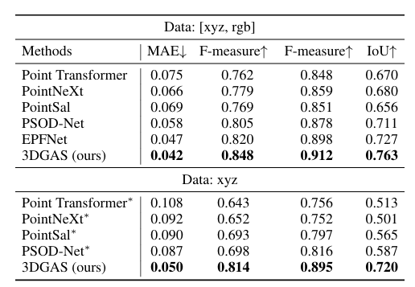
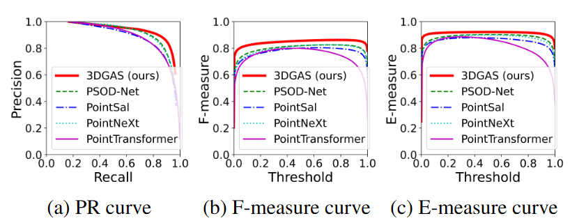

1Northwestern Polytechnical University 2Nanjing University of Science and Technology
Point cloud salient object detection has attracted the attention of researchers in recent years. Since existing works do not fully utilize the geometry context of 3D objects, blurry boundaries are generated when segmenting objects with complex backgrounds. In this paper, we propose a geometry-aware 3D salient object detection network that explicitly clusters points into superpoints to enhance the geometric boundaries of objects, thereby segmenting complete objects with clear boundaries. Specifically, we first propose a simple yet effective superpoint partition module to cluster points into superpoints. In order to improve the quality of superpoints, we present a point cloud class-agnostic loss to learn discriminative point features for clustering superpoints from the object. After obtaining superpoints, we then propose a geometry enhancement module that utilizes superpoint-point attention to aggregate geometric information into point features for predicting the salient map of the object with clear boundaries. Extensive experiments show that our method achieves new state-of-the-art performance on the PCSOD dataset.
The pipeline of our geometry-aware 3D salient object detection network. Given a point cloud, we first use the 3D CNN backbone to extract point features. Then, we adopt the superpoint partition module to obtain superpoints. After that, we propose the geometry enhancement module to encode structural information into point clouds. In addition, we propose a point cloud class-agnostic loss Lagn to learn discriminative point features for improving superpoint quality.
Visualization results of five methods under different views in the test set of the PCSOD dataset.
Comparison results of different models on the test set of the PCSOD dataset. The best results are highlighted in bold.
Precision-recall (PR), F-measure, and E-measure curves of different methods on the test set of the PCSOD dataset.
@inproceedings{Wang20253dgas,
title={Geometry-Aware 3D Salient Object Detection Network},
author={Chen, Wang and Zhang, Liyuan and Hui, Le and Liu, Qi and Dai, Yuchao},
booktitle={Proceedings of the AAAI Conference on Artificial Intelligence},
year={2025}
}